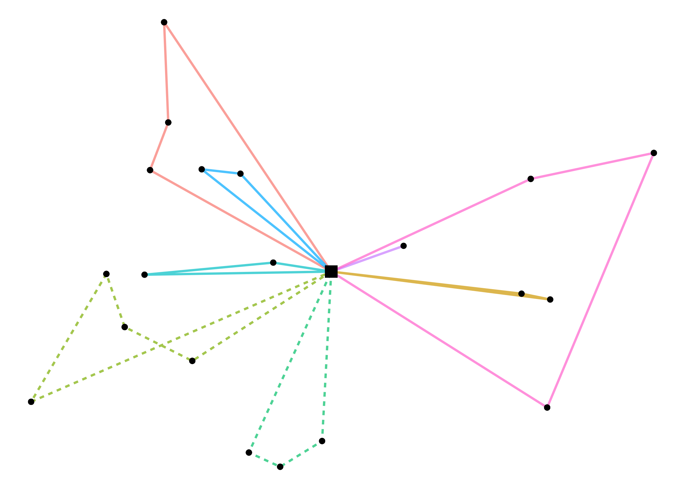

This R package provides an implementation of the Clarke-Wright algorithm (Clarke and Wright 1964) to find a quasi-optimal solution to the Capacitated Vehicle Routing Problem.
Installation
You can install the latest CRAN release of heumilkr with:
install.packages("heumilkr")Alternatively, you can install the development version of heumilkr from GitHub with:
# install.packages("devtools")
devtools::install_github("lschneiderbauer/heumilkr")Example
The following example generates random demands at random locations, defines two vehicle types, applies the Clarke-Wright algorithm to generate quasi-optimal vehicle runs, and shows the resulting vehicle run solution.
library(heumilkr)
set.seed(42)
# generating random demand
demand <- runif(20, 5, 15)
# generating random site positions
positions <-
data.frame(
pos_x = c(0, runif(length(demand), -10, 10)),
pos_y = c(0, runif(length(demand), -10, 10))
)
solution <-
clarke_wright(
demand,
dist(positions),
# We have an infinite number of vehicles with capacity 33 available,
# and two vehicles with capacity 44.
data.frame(n = c(NA_integer_, 2L), caps = c(33, 44))
)
print(solution)
#> site run order vehicle load distance
#> 1 0 0 0 0 31.75943 29.029139
#> 2 1 1 0 0 25.78821 16.929475
#> 3 2 0 2 0 31.75943 29.029139
#> 4 3 2 3 1 41.60558 32.192404
#> 5 4 1 1 0 25.78821 16.929475
#> 6 5 3 2 1 34.12677 20.601801
#> 7 6 3 0 1 34.12677 20.601801
#> 8 7 2 2 1 41.60558 32.192404
#> 9 8 3 1 1 34.12677 20.601801
#> 10 9 4 1 0 22.65398 14.329082
#> 11 10 5 0 0 21.76854 14.231704
#> 12 11 5 1 0 21.76854 14.231704
#> 13 12 6 0 0 14.34672 6.043174
#> 14 13 2 0 1 41.60558 32.192404
#> 15 14 7 1 0 30.58007 36.895550
#> 16 15 2 1 1 41.60558 32.192404
#> 17 16 7 2 0 30.58007 36.895550
#> 18 17 7 0 0 30.58007 36.895550
#> 19 18 0 1 0 31.75943 29.029139
#> 20 19 4 0 0 22.65398 14.329082
# returns the total cost / distance
# (the quantity that is minimized by CVRP)
print(milkr_cost(solution))
#> [1] 170.2523
# returns the savings resulting from the heuristic optimization procedure
print(milkr_saving(solution))
#> [1] 166.7192A plotting function (using ggplot) for the result is built in. The individual runs are distinguished by color. The demanding site locations are marked with round circles while the (single) supplying site is depicted as a square. The line types (solid/dashed/…) are associated to different vehicle types.
plot(solution)
Benchmarks
The benchmarks were taken on an Intel® Xeon® CPU E3-1231 v3 @ 3.40GHz CPU, using the R package bench.
The following graph shows the run time behavior as the number of sites n increase. The curve exhibits near-cubic behavior in n. For n = 110 the performance is still relatively reasonable with a run time of ∼ 12.9ms.